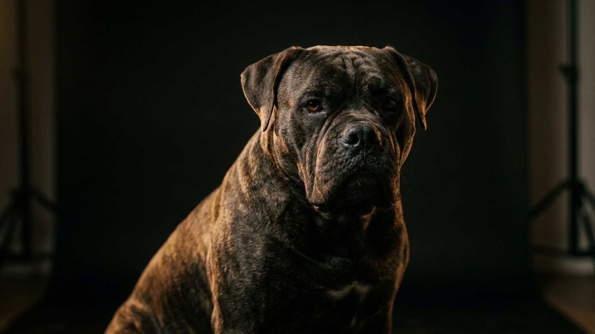

Широкая грудь, тяжёлая челюсть, вес под 50 кг — американского бульдога часто принимают за бойцовую собаку и обходят стороной. А дома этот «телохранитель» первым лезет обниматься и часами терпит возню детей. Разберём, каким на самом деле вырос этот фермерский пёс, сколько ему нужно движения и почему характер тут почти целиком в руках хозяина.
🐾 Ваш питомец — американский бульдог?
Заведите профиль в AnimaLife: приложение запомнит породу, возраст и вес и будет подсказывать по уходу именно для неё. Вопросы AI-ветеринару — круглосуточно и бесплатно.
Завести профиль → Завести в MAX →
У вас iPhone? AnimaLife есть в App Store
Американский бульдог — рабочая собака американского юга. Веками он охранял двор и скот, ловил одичавших свиней, был универсальным помощником на ферме. Отсюда мощь и врождённая сторожевая жилка. Внешнее сходство с питбулем и старые страшилки про «бойцовых собак» делают остальное — и порода тянет на себе чужую репутацию.
На деле уравновешенный американский бульдог не агрессивен к людям. Немотивированная злоба к человеку — это брак психики и плохое воспитание, а не норма породы. Правильно выращенный пёс — уверенный, а не нервный.
Дома это ласковый, привязчивый и на удивление нежный пёс. Он обожает свою семью, ходит за хозяином хвостом и искренне считает себя карманной собачкой — может забраться на диван и улечься сверху всеми сорока килограммами.
С детьми, выросшими рядом, американский бульдог терпелив и бережен. К чужим — насторожен: сторож в нём включается сам, специально злить его не нужно. Плохо переносит одиночество: надолго брошенный, скучает и может начать хулиганить.
Это сильная и энергичная собака, которой мало круга вокруг дома. Без выхода энергии скука превращается в погром квартиры.
Сила плюс сторожевой инстинкт означают, что ранняя социализация обязательна, а не по желанию. Щенка с первых месяцев знакомят с людьми, другими собаками, звуками города — чтобы взрослый пёс был спокоен, а не подозрителен ко всему подряд.
Работает только последовательность и позитивное подкрепление: похвала, игра, лакомство. Грубость и физика с такой собакой дают обратный эффект — упрямство и недоверие. Почти все проблемы породы — это ошибки хозяина, а не «плохие гены».
🐾 У вас американский бульдог?
AnimaLife соберёт уход под породу: к каким болезням есть склонность, что проверять по возрасту, чем кормить и когда пора к врачу. Бесплатно, прямо в мессенджере.
Собрать план ухода → Собрать в MAX →
У вас iPhone? AnimaLife есть в App Store
🐾 Понравился разбор?
Подпишитесь на канал — каждый день разбираем по одному тревожному симптому у кошек и собак: что в пределах нормы, а когда пора к врачу. Подпишитесь, чтобы не пропустить разбор, который может спасти здоровье вашего питомца.
Американский бульдог — для активной семьи, готовой вкладываться в прогулки и воспитание, лучше с опытом содержания крупных собак. Ему одинаково подойдёт частный дом и квартира — при условии полноценного выгула. И совсем не подойдёт тем, кого целыми днями нет дома или кто ищет декоративного тихого питомца «для интерьера».